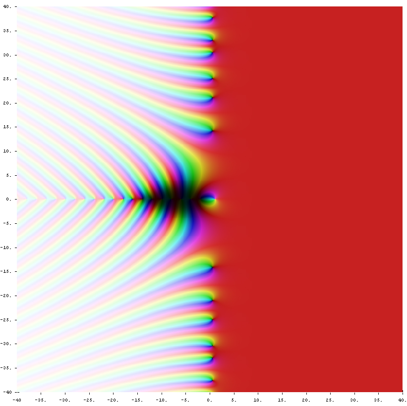

Complex analysis is the study of functions of one complex variable that are differentiable in the complex sense. The definition looks innocent: it is the same difference quotient as in real calculus, except that the increment h is allowed to approach 0 from every direction in the plane. That single change has astonishing consequences. A function that is complex differentiable once on an open set is automatically differentiable infinitely often, equals its Taylor series on every disc it contains, is determined everywhere by its values on any small arc, satisfies a maximum principle, and has integrals over closed curves that depend only on topology and on a finite list of local numbers called residues. Nothing remotely like this is true for real differentiable functions.
The subject was built in the nineteenth century by Cauchy, who proved the integral theorem (1825) and the integral formula (1831), by Riemann, who introduced the geometric point of view of conformal maps and Riemann surfaces and, in an eight-page paper of 1859, extended the zeta function to the whole plane and stated the most famous open problem in mathematics, and by Weierstrass, who rebuilt the theory on power series with full rigour. In the twentieth century it became the language of analytic number theory, of potential theory and fluid flow, of quantum field theory and signal processing, and it remains the model case for several complex variables, complex geometry and modern dynamics.
This course assumes a working knowledge of real analysis (sequences, uniform convergence, compactness, the Riemann integral, Green's theorem) and of the arithmetic of complex numbers. Each lesson states definitions precisely, proves the main theorems, and works examples in full. The exercises in the Exercise boxes are meant to be done with pencil and paper before you read the answers.
In this course, you will:
- 1.Treat ℂ as a field, a metric space and, via the Riemann sphere, a compact surface
- 2.Master the polar form, Euler's formula, roots of unity and the multivalued logarithm
- 3.Characterise complex differentiability by the Cauchy–Riemann equations
- 4.Develop the theory of power series and analytic functions
- 5.Define contour integrals and prove Cauchy's theorem through Goursat's lemma
- 6.Derive Cauchy's integral formula and its consequences: Liouville, the fundamental theorem of algebra, the identity theorem and the maximum principle
- 7.Classify isolated singularities using Laurent series
- 8.Prove the residue theorem and use it to evaluate real integrals and infinite sums
- 9.Count zeros with the argument principle and Rouché's theorem
- 10.Study conformal maps, Möbius transformations, the Schwarz lemma and the Riemann mapping theorem
- 11.Continue functions analytically, and meet the Gamma function, the Riemann zeta function and the Riemann hypothesis
Figures


Contents
The Complex Field and Its Topology Lesson 2
Polar Form, Euler's Formula and Roots of Unity Lesson 3
Complex Differentiability and the Cauchy–Riemann Equations Lesson 4
Power Series and Analytic Functions Lesson 5
Contour Integrals Lesson 6
Cauchy's Theorem Lesson 7
Cauchy's Integral Formula and Its Consequences Lesson 8
Laurent Series and Isolated Singularities Lesson 9
The Residue Theorem Lesson 10
Evaluating Real Integrals and Infinite Sums Lesson 11
The Argument Principle and Rouché's Theorem Lesson 12
Conformal Maps, Möbius Transformations and the Riemann Mapping Theorem Lesson 13
Analytic Continuation, the Gamma Function and the Riemann Zeta Function Lesson 14
Synthesis and Common Pitfalls Problem Set
60 problems Assessment
Randomly generated questions
Image sources
- Figure 1 · Augustin-Louis Cauchy 1901. By Unknown author. Public domain. From Wikimedia Commons: https://commons.wikimedia.org/wiki/File:Augustin-Louis_Cauchy_1901.jpg
- Figure 2 · Complex zeta. By Jan Homann. Public domain. From Wikimedia Commons: https://commons.wikimedia.org/wiki/File:Complex_zeta.jpg